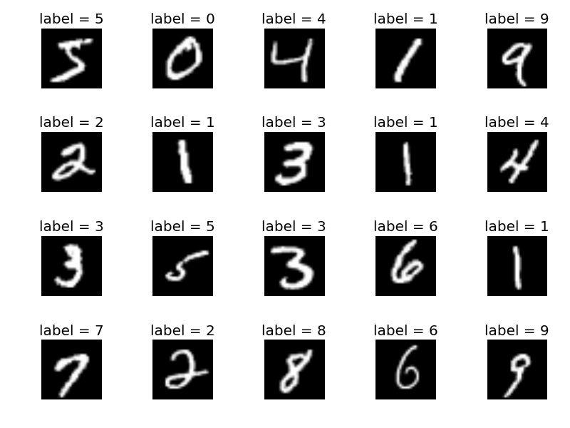

portfolio


basilisk engine
c++ • python • glsl • opengl • cmake
Basilisk is a 3D engine package for Python that can create visualizations, simulations, and video games from the comfort and ease of Python. Basilisk is designed for quick and effortless development, providing a powerful backend engine that supports larger-scale projects without requiring extensive setup. The engine automatically handles all graphics and physics for you, making it easy to get projects running, with the option to inject your own custom functionality if desired for more advanced control. Basilisk was originally programmed entirely in Python and GLSL, taking advantage of ModernGL for GPU-accelerated rendering. Currently, we are working to rewrite Basilisk in C++ to allow for greater control over system resources, improved optimization, and faster physics calculations, making the engine more capable for demanding projects. I am primarily responsible for the graphics programming aspect of the engine. I have implemented highly optimized batched rendering, capable of handling millions of objects efficiently. I also implemented physically based rendering based on Disney’s BSDF, as outlined in 2012 by Brent Burley, which allows materials and lighting to interact realistically.
Github Website

minecraft python edition
python • glsl • moderngl
Minecraft Python Edition is a Minecraft clone programmed entirely in Python and GLSL using ModernGL. It includes a simplex-based world generation system with biomes, caves, trees, and ores, as well as the Minecraft inventory and crafting system, complete with a crafting table and furnace. The game also uses a simple flood-fill lighting system with ambient occlusion, which adds to the visual depth and overall feel of the game. Much of the development was focused on optimizing the chunk meshing system and the flood-fill lighting. The chunk meshing system needed to account for optimal rendering, culling faces that are never visible, and the limitations of remeshing in Python. The lighting system was designed to only update areas affected by player actions, reducing the time spent computing lighting across the world.
Github Demo
cpu design
logisim
For CSCE 312, I designed a CPU in Logisim that implements a Y86 architecture. I contributed primarily to the instruction memory and memory fetch, the register file, and memory read/write components. I also implemented high-level component orchestration and timing. Using this CPU, I programmed several scripts in Y86 to demonstrate its capabilities, including arithmetic operations, memory management, and matrix multiplication.

emulsion
python • glsl • basilisk engine
Emulsion is a game made in 48 hours for Chillennium, the world’s largest in-person student-run game jam, where it earned 2nd place overall. It was programmed entirely using the Basilisk Engine. Emulsion is a first-person shooter where bullets reveal a rift to another parallel world. My main responsibility was writing shader code to handle the ability to view the other world through bullet shots. This required implementing multiple shaders, including shaders for each world bullet path shader depth testing shader final image combination shaders All of these worked together to create a single, seamless final image.
Itch Demo Github

nerual network
python • numpy
I created a lightweight neural network in Python using Numpy. Using calculus-based gradient backpropagation, the network was trained with the MNIST dataset to recognize handwritten numbers, achieving 95% accuracy. This project allowed me to explore both the mathematical foundations of neural networks and practical implementation.
portfolio website
html • css • javascript • figma
This website, which you are currently visiting, was developed as an assignment for CSCE 331. It uses HTML, CSS, and JavaScript and includes functionality to switch between two CSS stylesheets. The project demonstrates front-end development skills and attention to user interaction. The project demonstrates both front-end design skills and the ability to create interactive, user-friendly interfaces.